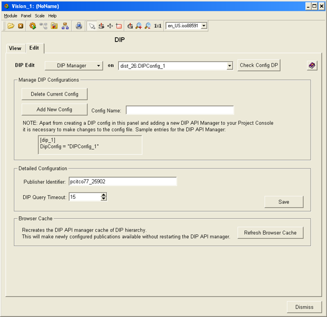
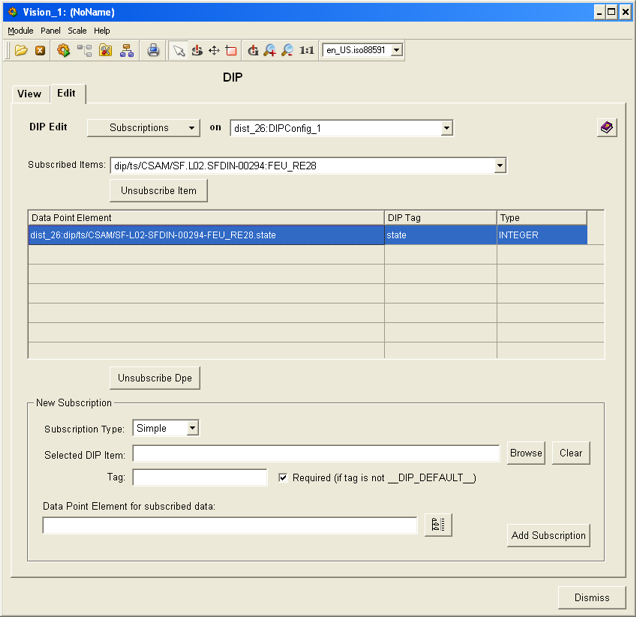
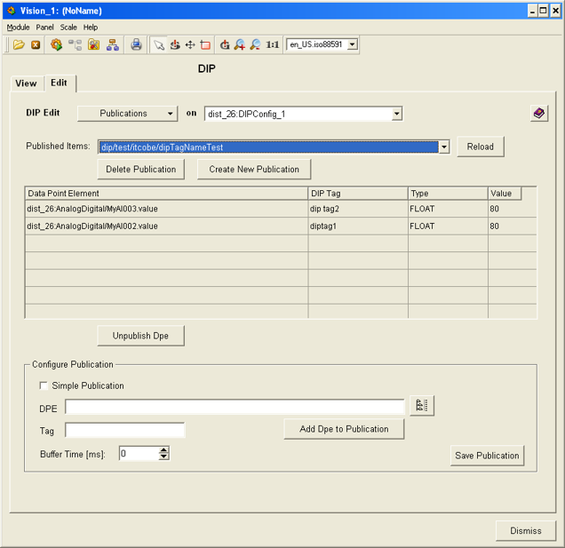

| Panel Name |
fwDipEdit.pnl |
|
| Introduction |
This multi-function panel allows to manage the DIP config DPs, subscribe and unsubscribe from the DIP publications and to publish and unpublish data from PVSS. | |
| Instructions |
The header of the panel contains the button which allows the selection
of the mode of operation (modes of operation will be explained below) and
a selection box for selecting the DIP API manager config DP. Each DIP API
manager uses a separate config.
DIP Manager section provides some basic operations on the API Manager and on the DIP config DPs. There are three sections:
Panel allows to unsubscribe from all the dpes in the table or to unsubscribe only the selected dpe. These operations are invoked by using "Unsubscribe" and "Unsubscribe dpe" buttons The "New Subscription" part of the panels allows to subscribe to:
For simple mode - the user has to select the publication by means of the browser and select the dpe from the selector. For complex mode - the user has to select the publication and then after clicking the "Add Subscription" button the panel for complex subscribtion will appear (fwDipEditDptCreate).
Publications - The combo box "Published Services"
contains the list of all the publications that are being published
(it is analogous to list in the fwDipView in "Published
Services" view). The table below contains the detailed information
about the structure of the selected publication - which dpes are being
published under which DIP tags. |
|
| Restrictions | The values of the dpes are not updated dynamically. | |
|

|
|
 |
|
 |
| Dollar Parameters | ||
| Name | Description | |